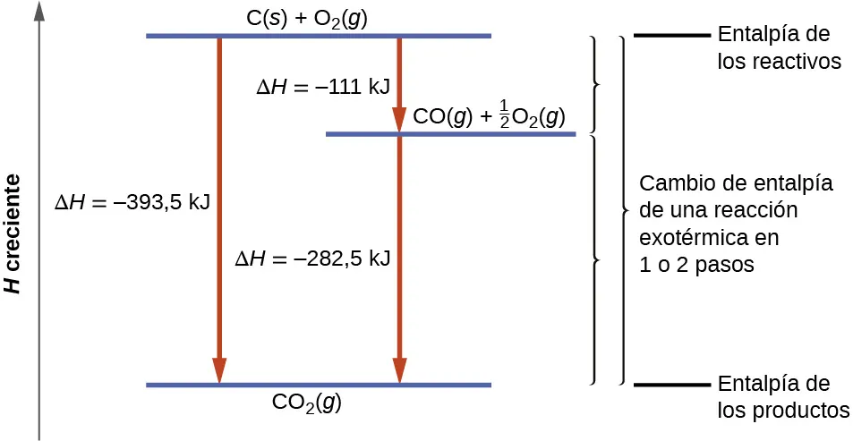
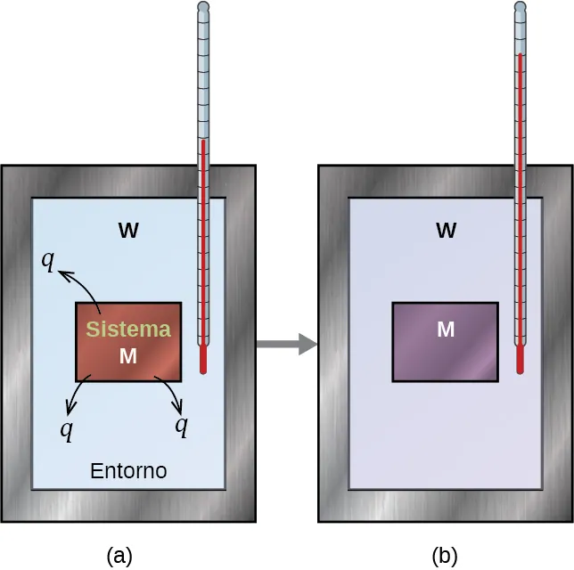
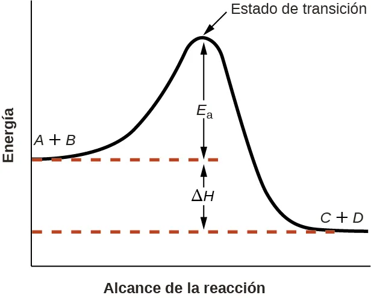
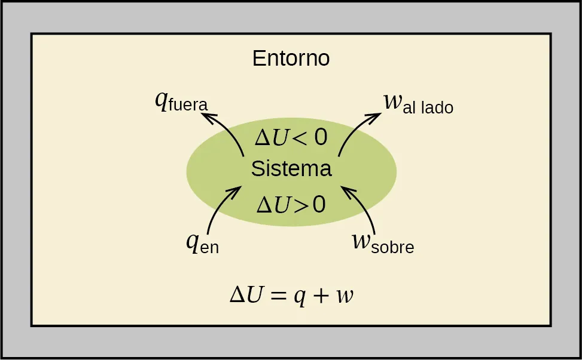
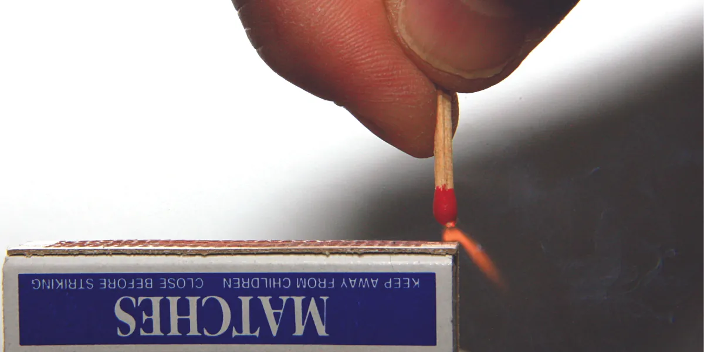
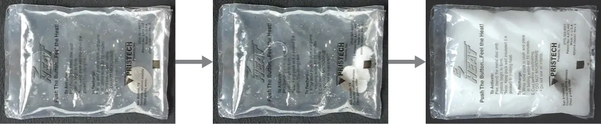
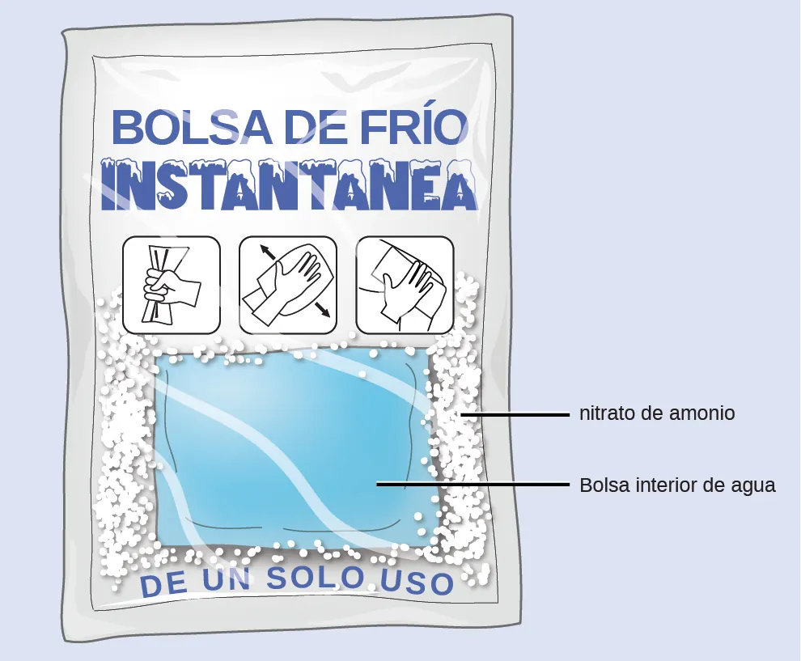

IES Valle del Alberche

📋 Enunciado
Partiendo de la Ley de Hess (demostrada en la Demostración 7) y de las definiciones de entalpía de formación estándar (\(\Delta H_f^\circ\)) y entalpía de enlace (\(\Delta H_{\text{enlace}}\)), demostrar las dos formulaciones generales para calcular la entalpía de una reacción química:
Es decir, demostrar que la entalpía de reacción puede calcularse por dos caminos conceptualmente diferentes: uno basado en estados de referencia (formación desde elementos) y otro basado en la energía de las interacciones químicas (enlaces rotos y formados).



🎯 Objetivo
El objetivo es obtener dos métodos generales e independientes para el cálculo de entalpías de reacción, demostrando que:
- El método de entalpías de formación es exacto y se basa en la Ley de Hess aplicada a un ciclo que pasa por los elementos constituyentes.
- El método de entalpías de enlace es aproximado (porque las entalpías de enlace son valores promedio) y se basa en el balance energético de las interacciones químicas.
Esta dualidad de métodos refuerza la comprensión de la naturaleza energética de las reacciones químicas y proporciona herramientas de cálculo para distintas situaciones.

🔬 Procedimiento
📘 MÉTODO 1: Entalpías de formación estándar
La entalpía de formación estándar \(\Delta H_f^\circ\) de un compuesto es la variación de entalpía que acompaña a la formación de 1 mol del compuesto a partir de sus elementos constituyentes en su estado de referencia (forma más estable a 1 bar y temperatura especificada, generalmente 298 K).
Por convención: \(\Delta H_f^\circ(\text{elemento en estado de referencia}) = 0\).
Para una reacción genérica:
Construimos el ciclo:
Como la suma de entalpías en el ciclo cerrado es cero:
Despejando \(\Delta H_r^\circ\):

📗 MÉTODO 2: Entalpías de enlace
La entalpía de enlace (o energía de disociación de enlace) es la energía necesaria para romper 1 mol de enlaces de un tipo específico en fase gaseosa, separando los átomos a distancia infinita.
La formación de un enlace libera la misma cantidad de energía: \(\Delta H_{\text{formación}} = -\Delta H_{\text{rotura}}\).
Cualquier reacción química puede visualizarse en dos etapas hipotéticas:
- Etapa 1 (endotérmica): Ruptura de todos los enlaces en los reactivos para obtener átomos gaseosos aislados.
- Etapa 2 (exotérmica): Formación de todos los enlaces en los productos a partir de los átomos aislados.
La entalpía total de la reacción es la suma de las entalpías de ambas etapas:
Es decir: la entalpía de reacción es la diferencia entre la energía necesaria para romper los enlaces de los reactivos y la energía liberada al formar los enlaces de los productos.



| Característica | Método de formación | Método de enlaces |
|---|---|---|
| Exactitud | Exacto (datos experimentales precisos) | Aproximado (valores promedio) |
| Aplicabilidad | Cualquier compuesto con \(\Delta H_f^\circ\) conocida | Compuestos gaseosos o con estructura clara |
| Base teórica | Ley de Hess + estados de referencia | Balance energético de interacciones |
| Signo del resultado | Negativo = exotérmico (productos más estables) | Si rotos > formados: endotérmico; si rotos < formados: exotérmico |
✅ Resultado
Se han demostrado dos métodos independientes para calcular la entalpía de reacción, ambos basados en la Ley de Hess pero con fundamentos conceptuales distintos.
Método 1 — Entalpías de formación (exacto): \[\Delta H_r^\circ = \sum_{i} \nu_i \, \Delta H_f^\circ(\text{productos}_i) - \sum_{j} \nu_j \, \Delta H_f^\circ(\text{reactivos}_j)\] Método 2 — Entalpías de enlace (aproximado): \[\Delta H_r = \sum_{\text{enlaces rotos}} \Delta H_{\text{enlace}} - \sum_{\text{enlaces formados}} \Delta H_{\text{enlace}}\]
Interpretación física:
- Si \(\Delta H_r < 0\): la reacción es exotérmica (libera energía). Los productos son más estables que los reactivos.
- Si \(\Delta H_r > 0\): la reacción es endotérmica (absorbe energía). Los reactivos son más estables que los productos.
- Si \(\Delta H_r = 0\): no hay cambio neto de energía (caso límite teórico).


Es crucial que los estudiantes comprendan que el método de entalpías de formación es exacto porque los datos \(\Delta H_f^\circ\) corresponden a condiciones específicas y bien definidas, mientras que el método de enlaces es aproximado porque las entalpías de enlace son promedios sobre muchas moléculas diferentes. Por ejemplo, el enlace C-H en metano no tiene exactamente la misma energía que en etano. Recomendar el uso del método de formación cuando se dispone de datos, y reservar el método de enlaces para estimaciones rápidas o cuando no hay datos de formación disponibles. Un error frecuente es confundir el orden de resta en el método de enlaces: siempre "rotos menos formados", ya que la formación de enlaces libera energía (signo negativo en el balance).
🧪 DESMITIFICANDO el cálculo de entalpías Pulsame
Calcula la entalpía estándar de combustión del metanol líquido:
Datos: \(\Delta H_f^\circ\) (CH₃OH) = –238,6 kJ/mol; CO₂ = –393,5 kJ/mol; H₂O(l) = –285,8 kJ/mol; O₂(g) = 0.
Resolución (método de formación):
Respuesta: \(\Delta H_r^\circ = -1453,0 \, \text{kJ}\) (por cada 2 moles de metanol).

Calcula la entalpía estándar de la reacción de síntesis del amoniaco:
Dato: \(\Delta H_f^\circ\) (NH₃) = –46,1 kJ/mol. Los elementos en estado de referencia tienen \(\Delta H_f^\circ = 0\).
Resolución:
Respuesta: \(\Delta H_r^\circ = -92,2 \, \text{kJ}\) (reacción exotérmica).
Calcula la entalpía de la reacción de hidrogenación del eteno a etano:
Datos de entalpías de enlace (kJ/mol): C=C = 613; H–H = 436; C–H = 414; C–C = 347.
Resolución (método de enlaces):
Respuesta: \(\Delta H_r \approx -954 \, \text{kJ/mol}\) (exotérmica, valor aproximado).
Calcula la entalpía de la reacción de sustitución:
Datos de enlaces (kJ/mol): C–H = 414; Cl–Cl = 243; C–Cl = 339; H–Cl = 432.
Resolución:
Respuesta: \(\Delta H_r \approx -114 \, \text{kJ/mol}\) (exotérmica).

Calcula la entalpía de la reacción H₂(g) + Cl₂(g) → 2 HCl(g) usando:
- a) Método de entalpías de formación (dato: \(\Delta H_f^\circ\)(HCl) = –92,3 kJ/mol).
- b) Método de enlaces (datos: H–H = 436; Cl–Cl = 243; H–Cl = 432).
- c) Compara los resultados y explica la diferencia.
Resolución:
Respuesta: a) –184,6 kJ ; b) –185,0 kJ ; c) coincidencia casi exacta, el método de formación es más preciso.

Con un par de multiplicaciones y algo de práctica, esto es más fácil de lo que parece.
(Los detalles sobre lo que entra en las pruebas escritas se publicarán periódicamente en M.Teams).